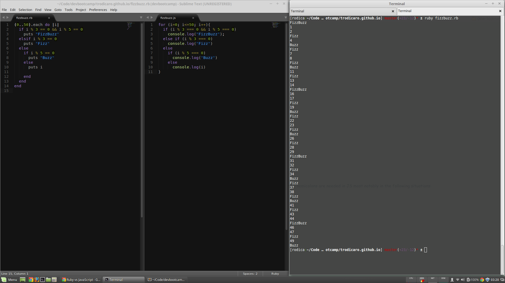

Ruby vs JavaScript
Ruby is elegant, JS gets things done
07/10/15
Similarities:
- same algebra operators apply
- functions work similarly, returning a value or nil/undefined
- JS has objects too
- all control flow blocks are same (statement, if-else, case, while, for)
- JS does not have XOR operators
- JS accepts more arguments than defined - just ignores them. Ruby throws error
- use of "var" when declaring variables
- round paranthesis around if condition
- no
endfor blocks; if more lines, encompass in curly braces - sometimes JS requires semicolon at the end of statement (eg: assign value). I found Cho S Kim's article on semicolons very helpful: semicolons are needed in JS most notably in the following situations:
- assignment operators:
var firstName = "Rodica"; - function invocation:
console.log("I print to console"); - command keywords:
return "I exit the function"; - variable declaration:
var i;
- assignment operators:
And here is a snippet of code written in Ruby vs JavaScript:

Tweet